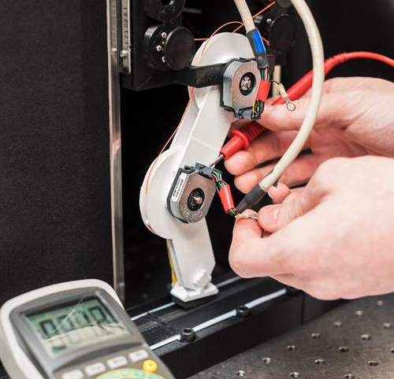

.gunimage {
  display: inline-block;
  margin-left: auto;
  margin-right: auto;
  width: 15%;
}
.half {
  width:50%;
  float: left;
}
#images {
  text-align: center;
  width: 100%;
}
<div id="images">
  <div class="half">
    
  <p>As the field of robotics advances, the further robots stray from the likeness of humans. 
    Our unique species has evolved over thousands of years, yet we still have four separate quadriceps muscles extending our knee. 
    Most of society glosses over these observations as sources of inspiration, but we wrestle with these ideas every day at the Brain-Body Dynamics Lab. 
    As a young undergraduate, I explored the fascinating world of tendon-driven robotics as a platform for affordable prosthetics and ongoing 
    neuromorphic research. I set out to design the most versatile design of a tendon-driven arm. I defined a versatile arm to mean that it 
    could be as strong as possible in all directions. This process produced what I coined a Multi-Moment Arm (MMA) joint. Through computational 
    optimization, 3D modeling, and some thoughtful tendon routes, I prototyped the most versatile two joint arm possible. </p>
  </div>

</div>
